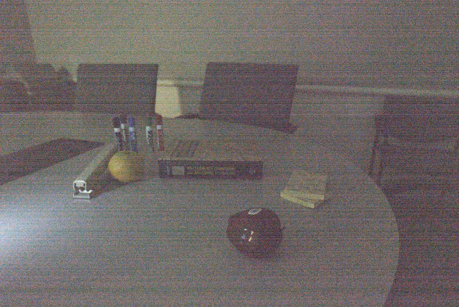
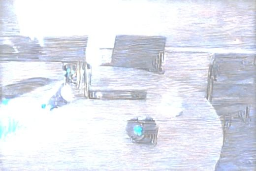
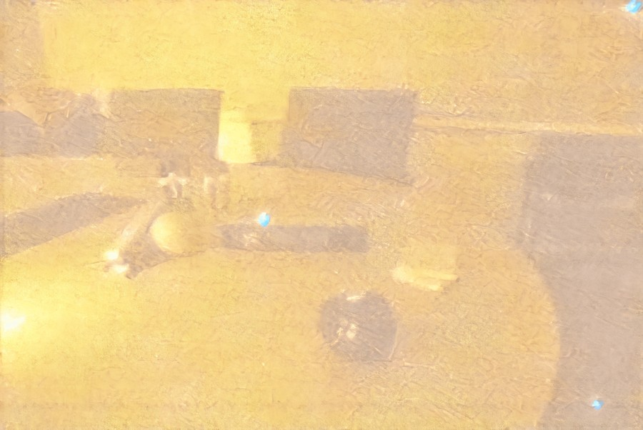
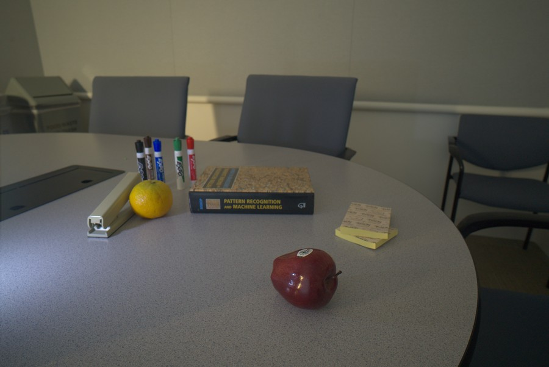
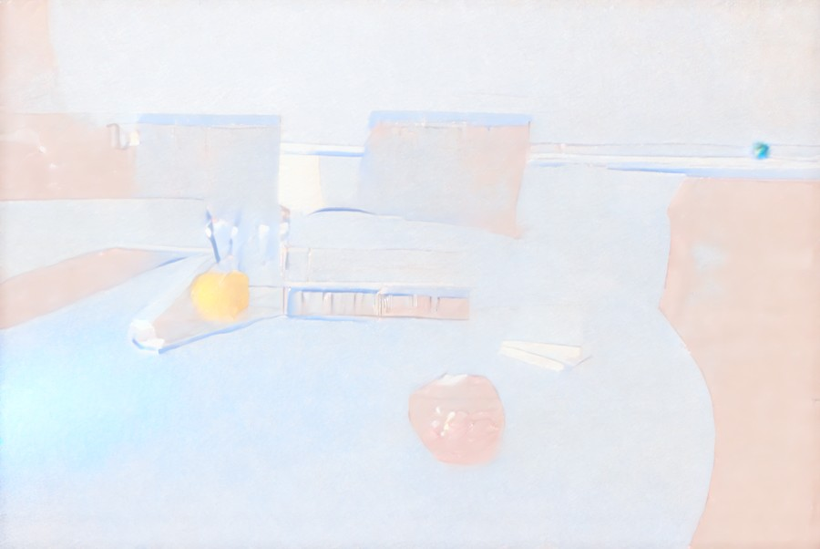
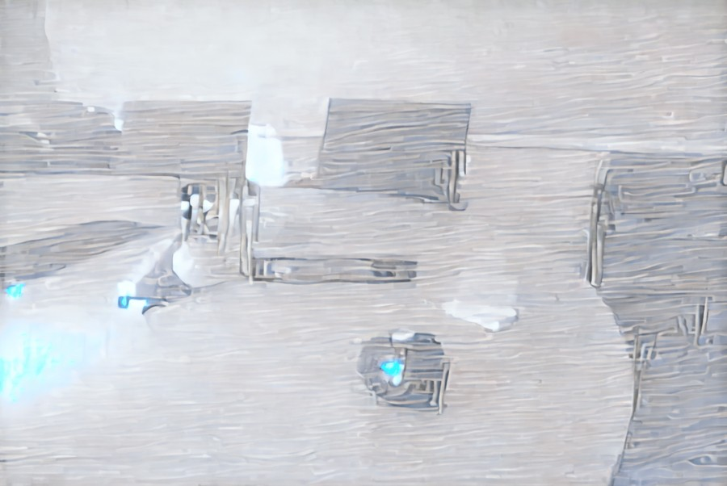

01 · Problem statement
Recovering clear images from the dark
Low-light photos lose visibility, pick up noise, shift in colour and drop fine detail. Diffusion models restore them best, but need large backbones and expensive GPUs.
Poor visibility
Underexposed regions carry almost no usable signal.
Heavy noise
Brightening a dark image amplifies sensor noise too.
Colour distortion
Low photon counts skew hue and white balance.
Lost detail
Edges, corners and textures fade or get oversmoothed.
02 · Existing work
From regression to retasked diffusion
| Method | Approach | Limitation |
|---|---|---|
| SID | Regression U-Net mapping raw to sRGB on paired data | Oversmooths where the signal is very low |
| ELD · LRD | Realistic noise models to narrow the synthetic–real gap | Still regression; struggles at extreme low SNR |
| ExposureDiffusion | Diffusion model trained from scratch on small paired sets | Limited generative capacity; misses detail and colour |
| LDM-ISP | Latent diffusion with DWT preprocessing and taming modules | Relies on a heavy pretrained backbone |
| DarkDiff (2025) | Retasks pretrained Stable Diffusion as a camera ISP — our base | Best LPIPS, but inherits Stable Diffusion's size and cost |
03 · Datasets & data preparation
Paired low-light benchmarks
Each short-exposure raw image is paired with a long-exposure capture of the same scene, which serves as the ground truth.
Sony α7S II raw images. Its 1865 training pairs train the model; the 236 ×300 test pairs evaluate it.
Evaluation-only benchmark that tests how the SID-trained model generalises.
Recent benchmark with its own training set of 1,440 pairs.
Classic ISP first
Black level, exposure gain and white balance run before the network, so it only learns denoising and the mapping to sRGB.
Well-behaved noise
Gain amplifies noise evenly and keeps it zero-mean, which is easier for the model to remove.
Ground truth
Long-exposure references rendered to sRGB with the same ISP code, plus colour correction and gamma.
04 · Methodology 1/3
Starting point: the DarkDiff pipeline
Region-based cross-attention
Queries attend only to condition tokens in the same 8×8 window, which keeps the noisy input's structure and avoids hallucinations.
Residual VAE
Encoder–decoder skip connections preserve fine content such as text and faces.
Decoder reconstruction loss
A one-step estimate of the clean latent is decoded and supervised in pixel space to curb colour shift.
Classifier-free guidance
The guidance weight (2.0 on SID) trades smoothness against generated detail at inference.
05 · Methodology 2/3 · Ahon
Illumination-guided conditioning
What the map encodes
Luminance of the gain-amplified input, averaged per 8×8 latent cell to cut noise about 8×, then clamped and smoothed.
How it guides
Inside every region cross-attention layer it scales the condition features (FiLM), biases attention keys by log-brightness and gates each output.
Why it helps
Dark, noisy regions lean on the prior. Every new layer is zero-initialised, so training starts as plain DarkDiff.
| Component | Formula |
|---|---|
| Features | φ(L) = [ L, log(L + ε) / log(1/ε) ] |
| FiLM on condition | c′ = c ⊙ (1 + γ(φ(L))) + β(φ(L)) |
| Per-head key bias | Bh,k = bh · log(Lk + ε) |
| Output gate | g = 1 + tanh(G(φ(L))) ∈ (0, 2) |
The unconditional CFG branch uses L = 1, which is neutral because log L = 0. Cost: about +2M parameters and +2–3% FLOPs.
06 · Methodology 3/3 · Shamba
Shrinking the denoiser
DarkDiff needs a pretrained prior, so every replacement U-Net must be pretrained in the same latent space. We use the smallest public distilled U-Nets.
BK-SDM-v2-tiny
U-Net parameters, −62% vs SD 2.1
Distilled from SD 2.1-base
Tiny-SD
U-Net parameters, −62% vs SD 2.1
Distilled from Realistic Vision 4.0 (SD 1.5)
SDXS-512
U-Net parameters, −62% vs SD 2.1
Distilled from SD 2.1-base, via SD-Turbo
07 · Experimental setup
What we ran versus the paper
- Training data: SID and LRD
- Evaluation: SID, ELD and LRD
- Schedule: 3000 epochs on 8× A100
- Backbone: SD 2.1 only
- Training data: SID
- Evaluation: SID ×300 test set
- Schedule: 10 epochs per backbone
- Backbones: SD 2.1 plus three distilled U-Nets
- Hardware: a single NVIDIA A40
08 · Results 1/3
Image quality after 10 epochs on SID
| Model | Initial weights | PSNR ↑ | SSIM ↑ | LPIPS ↓ |
|---|---|---|---|---|
| SD 2.1 (DarkDiff baseline) | Pretrained | 8.36 dB | 0.253 | 0.879 |
| BK-SDM-v2-tiny + illum. | Pretrained, distilled | 7.42 dB | 0.307 | 0.813 |
| SDXS-512 + illum. | Pretrained, distilled | 6.55 dB | 0.286 | 0.800 |
| Tiny-SD + illum. | Pretrained, distilled | 4.36 dB | 0.296 | 0.776 |
| DarkDiff paper, full 3000-epoch run | Pretrained | 26.78 dB | 0.644 | 0.186 |
All three compact, illumination-guided models beat the baseline on SSIM and LPIPS. PSNR ranks them the other way: at this early stage it is dominated by global brightness and colour errors.
09 · Results 2/3
Sample outputs on one SID scene






Same SID test scene for every model, 10 epochs of training each.
10 · Results 3/3
Efficiency: what shrinking buys
1,218M → 413–419M
8.2 GB → 3.6–3.7 GB
2.28 s → 1.31 s (SDXS-512)
21.2 GB → 8.2 GB
| Metric | SD 2.1 | BK-SDM-v2-tiny | Tiny-SD | SDXS-512 |
|---|---|---|---|---|
| Trainable parameters | 1,218M | 417M | 413M | 419M |
| U-Net compute | 813 GFLOPs | 496 GFLOPs | 495 GFLOPs | 428 GFLOPs |
| Inference time | 2.28 s | 1.37 s | 1.45 s | 1.31 s |
| Inference memory | 8.2 GB | 3.7 GB | 3.6 GB | 3.7 GB |
| Training step time | 0.59 s | 0.41 s | 0.42 s | 0.41 s |
| Training memory | 21.2 GB | 8.2 GB | 8.2 GB | 8.2 GB |
Single NVIDIA A40, 1200 px crops, bf16. Inference per image over 50 DDIM steps; compute per U-Net call. Trainable parameters include DarkDiff's context processor.
11 · Takeaways
What we learned and what comes next
- PSNR disagreed with our visual ranking; SSIM and LPIPS agreed with it.
- Distilled U-Nets cut inference memory by 55% and time by 40% versus SD 2.1.
- SDXS-512 is fastest at 1.31 s, 43% less than SD 2.1.
- Train to convergence and evaluate on ELD and LRD.
- Pretrain smaller custom U-Nets and apply them to the task.
- Fewer sampling steps through distillation or faster samplers.
- Test across more cameras and real-world captures.
12 · References
References
- A. Y. Zheng et al. DarkDiff: Advancing low-light raw enhancement by retasking diffusion models for camera ISP. arXiv:2505.23743, 2025.
- C. Chen et al. Learning to see in the dark. CVPR, 2018.
- K. Wei et al. A physics-based noise formation model for extreme low-light raw denoising. CVPR, 2020.
- F. Zhang et al. Towards general low-light raw noise synthesis and modeling. ICCV, 2023.
- Y. Wang et al. ExposureDiffusion: Learning to expose for low-light image enhancement. ICCV, 2023.
- Q. Wen et al. LDM-ISP: Enhancing neural ISP for low light with latent diffusion models. arXiv:2312.01027, 2023.
- R. Rombach et al. High-resolution image synthesis with latent diffusion models. CVPR, 2022.
- J. Ho, A. Jain and P. Abbeel. Denoising diffusion probabilistic models. NeurIPS, 2020.
- O. Ronneberger, P. Fischer and T. Brox. U-Net: Convolutional networks for biomedical image segmentation. MICCAI, 2015.
- Y. Song, Z. Sun and X. Yin. SDXS: Real-time one-step latent diffusion models with image conditions. arXiv:2403.16627, 2024.
- X. Guo, Y. Li and H. Ling. LIME: Low-light image enhancement via illumination map estimation. IEEE TIP, 2017.
- R. Zhang et al. The unreasonable effectiveness of deep features as a perceptual metric. CVPR, 2018.
- B.-K. Kim et al. BK-SDM: A lightweight, fast, and cheap version of Stable Diffusion. ECCV, 2024.
- Segmind. Tiny-SD: distilled from Realistic Vision 4.0. Hugging Face, 2023.